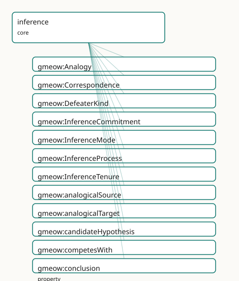

GMEOW Inference Module
- IRI: https://blackcatinformatics.ca/gmeow/slices/inference
- Tier: core
Group: core
What This Slice Covers
This slice owns 34 terms and contributes 10 mapping or projection rows. Use it when its terms match the native fact you want to preserve; use the linkage tables to see how those facts leave GMEOW for consumer vocabularies.
Dependencies
gmeow:slices/eventsgmeow:slices/kernelgmeow:slices/mentationgmeow:slices/observationsgmeow:slices/standpointgmeow:slices/temporal
Consumers
- The agent-memory flagship — an LLM stating HOW it reached a claim (deduced / generalized / best-explanation / by-analogy) with its premises, warrant, and defeasibility, then revising belief by suppression rather than deletion. store_claim records
gmeow:inferredFrom+gmeow:inferenceModeon the claim; recall returns the premises and warrant; the belief-revision audit (a fired defeater closes agmeow:InferenceTenureand sets the conclusion-claimgmeow:displayablefalse while retaining thegmeow:InferenceCommitment) is the headline demonstration.
Local Map

Examples
Abduction
- Source:
slices/core/inference/examples/abduction.ttl - GMEOW terms:
gmeow:Agent,gmeow:InferenceCommitment,gmeow:InferenceProcess,gmeow:MentalMoment,gmeow:StandpointClaim,gmeow:candidateHypothesis,gmeow:claimModality,gmeow:competesWith,gmeow:conceivable,gmeow:conclusion - External prefixes:
gufo,xsd
# SPDX-FileCopyrightText: 2026 Blackcat Informatics® Inc. <paudley@blackcatinformatics.ca>
# SPDX-License-Identifier: CC-BY-4.0
#
# Worked example — ABDUCTION (inference to the best explanation), the FULL CHAIN.
#
# This example exercises all three fidelity tiers and the endurant/occurrent
# split end to end:
#
# gmeow:InferenceProcess --hasInferenceCommitment--> gmeow:InferenceCommitment
# (the occurrent reasoning episode) (the endurant argument)
# | |
# producesMentalMoment conclusion
# v v
# the accepted belief is the agent's attitude gmeow:StandpointClaim
# (gmeow:MentalMoment) toward the winning ------> (the conclusion content)
# hypothesis
#
# A clinician observes a fever and reasons to its best explanation. Two
# candidate hypotheses compete (gmeow:competesWith); each is scored by a
# solver-layer gmeow:explanatoryScore (Principle 12 — there is no isBest bit).
# The winner's modality is promoted gmeow:conceivable -> gmeow:probable; the
# loser is SUPPRESSED (gmeow:displayable false), never deleted (Principle 10).
@prefix gmeow: <https://blackcatinformatics.ca/gmeow/> .
@prefix ex: <https://blackcatinformatics.ca/gmeow/examples/inference/> .
@prefix rdfs: <http://www.w3.org/2000/01/rdf-schema#> .
@prefix xsd: <http://www.w3.org/2001/XMLSchema#> .
ex:clinician a gmeow:Agent ;
gmeow:name "Diagnosing clinician"@en .
# --- The explanandum and the observed symptom ------------------------------- #
ex:fever rdfs:label "the patient's fever (38.9 °C)"@en .
ex:symptomObservation a gmeow:StandpointClaim ;
rdfs:label "Observed: the patient has a fever"@en ;
gmeow:vantage ex:clinician ;
gmeow:observedFeature ex:fever ;
gmeow:observationMethod gmeow:methodInstrumentalReading ;
gmeow:claimModality gmeow:unequivocal .
# --- Two competing hypotheses (candidate explanations) ---------------------- #
ex:propFlu rdfs:label "the patient has influenza"@en .
ex:propCold rdfs:label "the patient has a common cold"@en .
# Winner: influenza — best explains the high fever; promoted to probable.
ex:hypInfluenza a gmeow:StandpointClaim ;
rdfs:label "Hypothesis: influenza"@en ;
gmeow:vantage ex:clinician ;
gmeow:observedFeature ex:propFlu ;
gmeow:observationMethod gmeow:methodExpertJudgement ;
gmeow:claimModality gmeow:probable ; # promoted conceivable -> probable (the winner)
gmeow:explains ex:fever ; # solver back-check: would account for the fever
gmeow:explanatoryScore "0.86"^^xsd:decimal ; # solver-layer (Principle 12)
gmeow:competesWith ex:hypCold . # symmetric; irreflexive by SHACL
# Loser: common cold — a weaker explanation of a high fever; SUPPRESSED.
ex:hypCold a gmeow:StandpointClaim ;
rdfs:label "Hypothesis: common cold (rejected, retained as audit)"@en ;
gmeow:vantage ex:clinician ;
gmeow:observedFeature ex:propCold ;
gmeow:observationMethod gmeow:methodExpertJudgement ;
gmeow:claimModality gmeow:conceivable ; # never promoted
gmeow:explains ex:fever ;
gmeow:explanatoryScore "0.41"^^xsd:decimal ;
gmeow:displayable false . # Principle 10: suppressed, not erased
# --- The reified argument (endurant relator) -------------------------------- #
ex:abductiveCommitment a gmeow:InferenceCommitment ;
rdfs:label "Abductive argument: best explanation of the fever"@en ;
gmeow:inferenceModeOf gmeow:modeAbduction ;
gmeow:premise ex:symptomObservation ; # >= 1 premise, != conclusion (SHACL)
gmeow:explanandum ex:fever ;
gmeow:candidateHypothesis ex:hypInfluenza , ex:hypCold ;
gmeow:conclusion ex:hypInfluenza ; # exactly one conclusion = the winner
gmeow:warrant "inference to the best explanation: influenza maximises explanatory score"@en .
# --- The occurrent reasoning episode (perdurant) ---------------------------- #
ex:diagnosticReasoning a gmeow:InferenceProcess ;
rdfs:label "The clinician's diagnostic reasoning episode"@en ;
gmeow:experiencer ex:clinician ; # functional: one episode, one reasoner
gmeow:mentalProcessType gmeow:processReasoning ; # the canonical occurrent marker (no eventTypeInference)
gmeow:eventTime "2026-06-15T10:05:00Z"^^xsd:dateTime ;
gmeow:eventTemporalFrame gmeow:temporalFrameUTCGregorian ;
gmeow:hasInferenceCommitment ex:abductiveCommitment ; # occurrent -> endurant bridge
gmeow:producesMentalMoment ex:beliefInfluenza . # production: reasoning creates this new belief (a MentalMoment)
# --- The mental moment the reasoning produces (endurant doxastic mode) ------- #
# Distinct from the StandpointClaim conclusion (ex:hypInfluenza, the content the
# commitment concludes): this is the clinician's NEW belief — a gmeow:MentalMoment,
# the moment the reasoning episode brings into being. Its bearer is the process's
# gmeow:experiencer (ex:clinician); typed without asserting inherence (gufo:inheresIn
# is the alignment target, not an asserted axiom — Principle 5).
ex:beliefInfluenza a gmeow:MentalMoment ;
rdfs:label "The clinician's belief that the patient has influenza"@en .
Analogy
- Source:
slices/core/inference/examples/analogy.ttl - GMEOW terms:
gmeow:Agent,gmeow:Analogy,gmeow:Correspondence,gmeow:InferenceCommitment,gmeow:StandpointClaim,gmeow:analogicalSource,gmeow:analogicalTarget,gmeow:claimModality,gmeow:conclusion,gmeow:correspondingSource - External prefixes:
xsd
# SPDX-FileCopyrightText: 2026 Blackcat Informatics® Inc. <paudley@blackcatinformatics.ca>
# SPDX-License-Identifier: CC-BY-4.0
#
# Worked example — ANALOGY (structure-mapping, Gentner).
#
# The Rutherford analogy: the atom is like the solar system. Analogical
# inference transfers relational structure from a familiar SOURCE (the solar
# system) to a TARGET (the atom) via a gmeow:Analogy whose element-pair
# gmeow:Correspondence relations carry the mapping. The mapping is scored by a
# solver-layer gmeow:systematicity (Gentner: deep relational structure beats
# shallow attribute matches). The warrant of the analogical
# gmeow:InferenceCommitment points at the gmeow:Analogy. Not truth-preserving,
# so the conclusion is gmeow:probable.
@prefix gmeow: <https://blackcatinformatics.ca/gmeow/> .
@prefix ex: <https://blackcatinformatics.ca/gmeow/examples/inference/> .
@prefix rdfs: <http://www.w3.org/2000/01/rdf-schema#> .
@prefix xsd: <http://www.w3.org/2001/XMLSchema#> .
ex:physicist a gmeow:Agent ;
gmeow:name "Rutherford"@en .
# --- The source and target domains ------------------------------------------ #
ex:solarSystem rdfs:label "the solar system (source domain)"@en .
ex:atom rdfs:label "the atom (target domain)"@en .
ex:sun rdfs:label "the Sun"@en .
ex:planets rdfs:label "the planets"@en .
ex:nucleus rdfs:label "the nucleus"@en .
ex:electrons rdfs:label "the electrons"@en .
# --- The element-pair correspondences --------------------------------------- #
ex:corrCentral a gmeow:Correspondence ;
rdfs:label "Sun <-> nucleus (central massive body)"@en ;
gmeow:correspondingSource ex:sun ; # functional: one source element
gmeow:correspondingTarget ex:nucleus . # functional: one target element
ex:corrOrbiting a gmeow:Correspondence ;
rdfs:label "planets <-> electrons (orbiting lighter bodies)"@en ;
gmeow:correspondingSource ex:planets ;
gmeow:correspondingTarget ex:electrons .
# --- The reified analogy (a relator) ---------------------------------------- #
ex:rutherfordAnalogy a gmeow:Analogy ;
rdfs:label "The atom is like the solar system"@en ;
gmeow:analogicalSource ex:solarSystem ;
gmeow:analogicalTarget ex:atom ;
gmeow:hasCorrespondence ex:corrCentral , ex:corrOrbiting ;
gmeow:systematicity "0.80"^^xsd:decimal . # solver-layer (Gentner structural consistency)
# --- The propositions and the analogical inference -------------------------- #
ex:propLighterOrbitsHeavier
rdfs:label "lighter bodies orbit a central heavier body"@en .
ex:propElectronsOrbitNucleus
rdfs:label "electrons orbit the nucleus"@en .
ex:premOrbits a gmeow:StandpointClaim ;
gmeow:vantage ex:physicist ;
gmeow:observedFeature ex:propLighterOrbitsHeavier ;
gmeow:observationMethod gmeow:methodDirectObservation ;
gmeow:claimModality gmeow:unequivocal .
ex:conclElectronsOrbit a gmeow:StandpointClaim ;
rdfs:label "By analogy: electrons orbit the nucleus"@en ;
gmeow:vantage ex:physicist ;
gmeow:observedFeature ex:propElectronsOrbitNucleus ;
gmeow:observationMethod gmeow:methodExpertJudgement ;
gmeow:claimModality gmeow:probable ; # not truth-preserving → probable
gmeow:inferenceMode gmeow:modeAnalogical ;
gmeow:inferredFrom ex:premOrbits .
ex:analogicalCommitment a gmeow:InferenceCommitment ;
rdfs:label "Analogical argument: solar-system structure transferred to the atom"@en ;
gmeow:inferenceModeOf gmeow:modeAnalogical ;
gmeow:premise ex:premOrbits ;
gmeow:conclusion ex:conclElectronsOrbit ;
gmeow:warrant ex:rutherfordAnalogy . # the warrant IS the structure-mapping
Belief Revision
- Source:
slices/core/inference/examples/belief-revision.ttl - GMEOW terms:
gmeow:Agent,gmeow:InferenceCommitment,gmeow:InferenceTenure,gmeow:StandpointClaim,gmeow:TimeInterval,gmeow:claimModality,gmeow:conclusion,gmeow:defeaterKind,gmeow:defeaterUndercutting,gmeow:displayable - External prefixes:
xsd
# SPDX-FileCopyrightText: 2026 Blackcat Informatics® Inc. <paudley@blackcatinformatics.ca>
# SPDX-License-Identifier: CC-BY-4.0
#
# Worked example — BELIEF REVISION as SUPPRESSION (Principle 10), the headline.
#
# An agent inductively concluded "the printer is broken" from "it did not print".
# Later a defeater arrives — "the document was never sent to the queue" — an
# UNDERCUTTING defeater (Pollock): it does not assert the negation, it removes
# the warrant (the failure no longer licenses 'broken'). Revision does NOT delete
# anything:
# * the conclusion-claim is set gmeow:displayable false (suppressed from view);
# * the gmeow:InferenceTenure is CLOSED (an gmeow:endedAtTime on its interval);
# * the gmeow:InferenceCommitment is RETAINED as audit.
# The whole episode remains queryable — how the agent believed, and why it stopped.
@prefix gmeow: <https://blackcatinformatics.ca/gmeow/> .
@prefix ex: <https://blackcatinformatics.ca/gmeow/examples/inference/> .
@prefix rdfs: <http://www.w3.org/2000/01/rdf-schema#> .
@prefix xsd: <http://www.w3.org/2001/XMLSchema#> .
ex:operator a gmeow:Agent ;
gmeow:name "Office operator"@en .
ex:propDidNotPrint rdfs:label "the document did not print"@en .
ex:propPrinterBroken rdfs:label "the printer is broken"@en .
ex:propNeverQueued rdfs:label "the document was never sent to the print queue"@en .
# --- The original premise and conclusion ------------------------------------ #
ex:premDidNotPrint a gmeow:StandpointClaim ;
gmeow:vantage ex:operator ;
gmeow:observedFeature ex:propDidNotPrint ;
gmeow:observationMethod gmeow:methodDirectObservation ;
gmeow:claimModality gmeow:unequivocal .
# The conclusion — now SUPPRESSED, but retained.
ex:conclPrinterBroken a gmeow:StandpointClaim ;
rdfs:label "Concluded (then retracted): the printer is broken"@en ;
gmeow:vantage ex:operator ;
gmeow:observedFeature ex:propPrinterBroken ;
gmeow:observationMethod gmeow:methodExpertJudgement ;
gmeow:claimModality gmeow:probable ;
gmeow:inferenceMode gmeow:modeInduction ;
gmeow:inferredFrom ex:premDidNotPrint ;
gmeow:displayable false . # Principle 10: suppressed by the fired defeater
# --- The defeater (an undercutting one) ------------------------------------- #
ex:defeaterNeverQueued a gmeow:StandpointClaim ;
rdfs:label "Defeater: the document was never queued"@en ;
gmeow:vantage ex:operator ;
gmeow:observedFeature ex:propNeverQueued ;
gmeow:observationMethod gmeow:methodDirectObservation ;
gmeow:claimModality gmeow:unequivocal ;
gmeow:defeaterKind gmeow:defeaterUndercutting . # removes the warrant, not asserts the negation
# --- The reified argument, retained as audit -------------------------------- #
ex:revisedCommitment a gmeow:InferenceCommitment ;
rdfs:label "Inductive argument: did-not-print therefore broken (defeated)"@en ;
gmeow:inferenceModeOf gmeow:modeInduction ;
gmeow:premise ex:premDidNotPrint ;
gmeow:conclusion ex:conclPrinterBroken ;
gmeow:hasDefeater ex:defeaterNeverQueued .
# --- The tenure — opened then closed (never deleted) ------------------------ #
ex:brokenBeliefTenure a gmeow:InferenceTenure ;
rdfs:label "The held interval of the 'printer is broken' conclusion"@en ;
gmeow:tenureOf ex:revisedCommitment ;
gmeow:duringInterval ex:tenureInterval .
ex:tenureInterval a gmeow:TimeInterval ;
gmeow:startedAtTime "2026-06-15T11:00:00Z"^^xsd:dateTime ;
gmeow:endedAtTime "2026-06-15T11:18:00Z"^^xsd:dateTime . # closed when the defeater fired
Deduction
- Source:
slices/core/inference/examples/deduction.ttl - GMEOW terms:
gmeow:Agent,gmeow:StandpointClaim,gmeow:claimModality,gmeow:inferenceMode,gmeow:inferredFrom,gmeow:methodComputationalModel,gmeow:methodExpertJudgement,gmeow:modeDeduction,gmeow:name,gmeow:observationMethod
# SPDX-FileCopyrightText: 2026 Blackcat Informatics® Inc. <paudley@blackcatinformatics.ca>
# SPDX-License-Identifier: CC-BY-4.0
#
# Worked example — DEDUCTION, the flat spine (the 80% case).
#
# The classic syllogism: All men are mortal; Socrates is a man; therefore
# Socrates is mortal. No reification is needed — the conclusion is an ordinary
# gmeow:StandpointClaim that hangs gmeow:inferenceMode (gmeow:modeDeduction) and
# gmeow:inferredFrom directly on itself. Deduction is truth-preserving under a
# monotonic profile, so the conclusion's modality is gmeow:unequivocal.
@prefix gmeow: <https://blackcatinformatics.ca/gmeow/> .
@prefix ex: <https://blackcatinformatics.ca/gmeow/examples/inference/> .
@prefix rdfs: <http://www.w3.org/2000/01/rdf-schema#> .
ex:reasoner a gmeow:Agent ;
gmeow:name "Aristotle"@en .
# --- The propositions (the observed features of the claims) ----------------- #
ex:propAllMenMortal rdfs:label "All men are mortal"@en .
ex:propSocratesIsMan rdfs:label "Socrates is a man"@en .
ex:propSocratesMortal rdfs:label "Socrates is mortal"@en .
# --- The premises, asserted as settled claims ------------------------------- #
ex:premMajor a gmeow:StandpointClaim ;
gmeow:vantage ex:reasoner ;
gmeow:observedFeature ex:propAllMenMortal ;
gmeow:observationMethod gmeow:methodExpertJudgement ;
gmeow:claimModality gmeow:unequivocal .
ex:premMinor a gmeow:StandpointClaim ;
gmeow:vantage ex:reasoner ;
gmeow:observedFeature ex:propSocratesIsMan ;
gmeow:observationMethod gmeow:methodExpertJudgement ;
gmeow:claimModality gmeow:unequivocal .
# --- The conclusion — flat spine: mode + inferredFrom on the claim itself ---- #
ex:conclSocratesMortal a gmeow:StandpointClaim ;
rdfs:label "Therefore, Socrates is mortal"@en ;
gmeow:vantage ex:reasoner ;
gmeow:observedFeature ex:propSocratesMortal ;
gmeow:observationMethod gmeow:methodComputationalModel ; # a logic: proof-trace
gmeow:claimModality gmeow:unequivocal ; # truth-preserving → unequivocal
gmeow:inferenceMode gmeow:modeDeduction ;
gmeow:inferredFrom ex:premMajor , ex:premMinor . # non-functional: two premises
Induction
- Source:
slices/core/inference/examples/induction.ttl - GMEOW terms:
gmeow:Agent,gmeow:StandpointClaim,gmeow:claimModality,gmeow:inferenceMode,gmeow:inferredFrom,gmeow:methodDirectObservation,gmeow:methodExpertJudgement,gmeow:modeInduction,gmeow:name,gmeow:observationMethod - External prefixes:
logic,xsd
# SPDX-FileCopyrightText: 2026 Blackcat Informatics® Inc. <paudley@blackcatinformatics.ca>
# SPDX-License-Identifier: CC-BY-4.0
#
# Worked example — INDUCTION, generalisation over a sample.
#
# From many observed white swans, generalise that swans are white. Inductive
# inference is NOT truth-preserving (the black swan refutes it), so the
# conclusion's modality is gmeow:probable, and its strength rides the EXISTING
# logic: axis logic:evidenceStrength (BY REFERENCE — Principle 5, no asserted
# triples into logic:). The flat spine again: gmeow:inferenceMode +
# gmeow:inferredFrom on the conclusion-claim.
@prefix gmeow: <https://blackcatinformatics.ca/gmeow/> .
@prefix logic: <https://blackcatinformatics.ca/logic/> .
@prefix ex: <https://blackcatinformatics.ca/gmeow/examples/inference/> .
@prefix rdfs: <http://www.w3.org/2000/01/rdf-schema#> .
@prefix xsd: <http://www.w3.org/2001/XMLSchema#> .
ex:naturalist a gmeow:Agent ;
gmeow:name "Field naturalist"@en .
ex:propSwansWhite rdfs:label "Swans are white"@en .
# --- The sample: individual observed instances ------------------------------ #
ex:obsSwan1 a gmeow:StandpointClaim ;
gmeow:vantage ex:naturalist ; gmeow:observedFeature ex:swanA ;
gmeow:observationMethod gmeow:methodDirectObservation ;
gmeow:claimModality gmeow:unequivocal .
ex:obsSwan2 a gmeow:StandpointClaim ;
gmeow:vantage ex:naturalist ; gmeow:observedFeature ex:swanB ;
gmeow:observationMethod gmeow:methodDirectObservation ;
gmeow:claimModality gmeow:unequivocal .
ex:obsSwan3 a gmeow:StandpointClaim ;
gmeow:vantage ex:naturalist ; gmeow:observedFeature ex:swanC ;
gmeow:observationMethod gmeow:methodDirectObservation ;
gmeow:claimModality gmeow:unequivocal .
ex:swanA rdfs:label "a white swan"@en .
ex:swanB rdfs:label "another white swan"@en .
ex:swanC rdfs:label "a third white swan"@en .
# --- The inductive generalisation — probable, defeasible -------------------- #
ex:genSwansWhite a gmeow:StandpointClaim ;
rdfs:label "Generalisation: swans are white"@en ;
gmeow:vantage ex:naturalist ;
gmeow:observedFeature ex:propSwansWhite ;
gmeow:observationMethod gmeow:methodExpertJudgement ;
gmeow:claimModality gmeow:probable ; # not truth-preserving → probable
gmeow:inferenceMode gmeow:modeInduction ;
gmeow:inferredFrom ex:obsSwan1 , ex:obsSwan2 , ex:obsSwan3 ;
logic:evidenceStrength "0.72"^^xsd:decimal . # by reference: strength on the logic: axis
Terms
Classes
| Term | Label | Definition |
|---|---|---|
gmeow:Analogy |
Analogy | A reified analogical mapping — the source-to-target structure-mapping (Gentner) that warrants an analogical inference: it mediates a source domain (gmeow:analo... |
gmeow:Correspondence |
Correspondence | A single mapped element-pair within an gmeow:Analogy — the reified relation that one source element (gmeow:correspondingSource) plays the same structural role... |
gmeow:DefeaterKind |
Defeater Kind | The Pollock kind of a defeater — a value vocabulary (individuals, never subclasses): gmeow:defeaterRebutting (attacks the conclusion directly, giving reason to... |
gmeow:InferenceCommitment |
Inference Commitment | The endurant, structured argument relation an inference instantiates — the reified Toulmin/Peircean commitment mediating its premises (gmeow:premise), its sing... |
gmeow:InferenceMode |
Inference Mode | The Peircean mode of an inference — a closed-but-open value vocabulary (individuals, never subclasses; the gmeow:StandpointModality idiom): gmeow:modeDeduction... |
gmeow:InferenceProcess |
Inference Process | The occurrent reasoning episode — inference as it unfolds in time, drawing a conclusion from premises. The perdurant face of inference: a gmeow:MentalProcess b... |
gmeow:InferenceTenure |
Inference Tenure | The reified, time-scoped fact that an gmeow:InferenceCommitment's conclusion was held over an interval — opened when the conclusion is accepted and closed when... |
Properties
| Term | Label | Definition |
|---|---|---|
gmeow:analogicalSource |
analogical source | The source (base) domain of a gmeow:Analogy — the familiar structure whose relations are mapped onto the target. NOT functional. |
gmeow:analogicalTarget |
analogical target | The target domain of a gmeow:Analogy — the less-familiar structure that inherits relations from the source via the correspondences. NOT functional. |
gmeow:candidateHypothesis |
candidate hypothesis | A candidate explanation considered by an abductive gmeow:InferenceCommitment — one of the competing hypotheses (gmeow:competesWith) among which the inference s... |
gmeow:competesWith |
competes with | Relates two rival gmeow:StandpointClaim hypotheses that cannot both be accepted as the best explanation — the competition abductive (and analogical) selection... |
gmeow:conclusion |
conclusion | The single conclusion of a reified gmeow:InferenceCommitment — the gmeow:StandpointClaim the argument establishes (vantage = the reasoner, observedFeature = th... |
gmeow:correspondingSource |
corresponding source | The source-domain element of a gmeow:Correspondence — one half of a mapped pair. Functional: a correspondence maps exactly one source element to one target ele... |
gmeow:correspondingTarget |
corresponding target | The target-domain element of a gmeow:Correspondence — the other half of a mapped pair. Functional: exactly one target element per correspondence. |
gmeow:defeaterKind |
defeater kind | The Pollock kind of a defeating gmeow:StandpointClaim — gmeow:defeaterRebutting (attacks the conclusion) or gmeow:defeaterUndercutting (attacks the inferential... |
gmeow:explains |
explains | Relates a candidate hypothesis (a gmeow:StandpointClaim) to an explanandum it would account for — the explanatory link a solver back-checks (does the hypothesi... |
gmeow:explanandum |
explanandum | The fact to be explained by an abductive gmeow:InferenceCommitment — the surprising observation the inference seeks the best explanation of. NOT functional. |
gmeow:explanatoryScore |
explanatory score | A solver-computed score of how well a candidate hypothesis explains its explanandum (simplicity, scope, coherence) — the basis on which inference-to-the-best-e... |
gmeow:hasCorrespondence |
has correspondence | Relates a gmeow:Analogy to one of its element-pair gmeow:Correspondence relations — the reified mapped pairs whose structural consistency is the analogy's gmeo... |
gmeow:hasDefeater |
has defeater | Relates a reified gmeow:InferenceCommitment to a defeating gmeow:StandpointClaim — a consideration that, once accepted, withdraws support for the conclusion. N... |
gmeow:hasInferenceCommitment |
has inference commitment | Relates an occurrent gmeow:InferenceProcess (the reasoning episode) to the endurant gmeow:InferenceCommitment (the argument structure) it instantiates — the br... |
gmeow:inferenceMode |
inference mode | The Peircean mode by which a gmeow:StandpointClaim was reached — a gmeow:InferenceMode value (gmeow:modeDeduction / modeInduction / modeAbduction / modeAnalogi... |
gmeow:inferenceModeOf |
inference mode of | The Peircean mode of a reified gmeow:InferenceCommitment — a gmeow:InferenceMode value. Functional: a commitment has exactly one mode (a step that is both indu... |
gmeow:inferredFrom |
inferred from | Relates a concluded gmeow:StandpointClaim to a premise it was inferred from — the flat, reification-free shortcut (the 80% case). NOT functional: a conclusion... |
gmeow:premise |
premise | A premise of a reified gmeow:InferenceCommitment — an input from which its conclusion is drawn. NOT functional: an argument has one or more premises (SHACL req... |
gmeow:systematicity |
systematicity | A solver-computed measure of a gmeow:Analogy's structural consistency (Gentner's systematicity principle: deep, interconnected relational mappings beat shallow... |
gmeow:tenureOf |
tenure of | Relates a gmeow:InferenceTenure to the gmeow:InferenceCommitment whose conclusion it time-scopes — opened when the conclusion is accepted, closed (an gmeow:end... |
gmeow:warrant |
warrant | The warrant of a reified gmeow:InferenceCommitment — the Toulmin licence authorising the step from premises to conclusion. For a deductive commitment it points... |
Individuals
| Term | Label | Definition |
|---|---|---|
gmeow:defeaterRebutting |
rebutting | A rebutting defeater (Pollock) — gives positive reason to believe the negation of the conclusion, attacking the conclusion directly. |
gmeow:defeaterUndercutting |
undercutting | An undercutting defeater (Pollock) — attacks the inferential link, removing the warrant's support without asserting the conclusion's negation (the premises no... |
gmeow:modeAbduction |
abduction | Abductive inference — inference to the best explanation: construct candidate hypotheses (gmeow:candidateHypothesis) for an explanandum, back-check them (gmeow:... |
gmeow:modeAnalogical |
analogical | Analogical inference — source-to-target structure-mapping (Gentner): transfer relational structure from a familiar source to a target via a gmeow:Analogy, scor... |
gmeow:modeDeduction |
deduction | Deductive inference — truth-preserving derivation under a monotonic profile (a logic: proof-trace, Nemo / Scryer): if the premises hold, the conclusion holds.... |
gmeow:modeInduction |
induction | Inductive inference — generalisation over a sample, warranted by gmeow:evidenceStrength (logic:). Not truth-preserving; defeasible; default modality gmeow:prob... |
Linkages
- Rows: 10
- Projection profiles: -
- External vocabularies:
crminf,prov,wd
| Source | Kind | Profile | Predicate/Relation | Target | Evidence |
|---|---|---|---|---|---|
gmeow:InferenceCommitment |
equivalence | - |
skos:closeMatch | crminf:I1_Argumentation | gmeow-inference.sssom.tsv; gmeow:eqInference004; confidence 0.6 |
gmeow:InferenceProcess |
equivalence | - |
skos:closeMatch | crminf:I5_Inference_Making | gmeow-inference.sssom.tsv; gmeow:eqInference003; confidence 0.6 |
gmeow:InferenceProcess |
equivalence | - |
skos:relatedMatch | prov:Activity | gmeow-inference.sssom.tsv; gmeow:eqInference001; confidence 0.5 |
gmeow:InferenceProcess |
equivalence | - |
skos:relatedMatch | wd:Q408386 | gmeow-inference.sssom.tsv; gmeow:eqInference009; confidence 0.6 |
gmeow:hasDefeater |
equivalence | - |
skos:relatedMatch | wd:Q840067 | gmeow-inference.sssom.tsv; gmeow:eqInference010; confidence 0.5 |
gmeow:inferredFrom |
equivalence | - |
skos:closeMatch | prov:wasDerivedFrom | gmeow-inference.sssom.tsv; gmeow:eqInference002; confidence 0.6 |
gmeow:modeAbduction |
equivalence | - |
skos:closeMatch | wd:Q308495 | gmeow-inference.sssom.tsv; gmeow:eqInference007; confidence 0.8 |
gmeow:modeAnalogical |
equivalence | - |
skos:closeMatch | wd:Q185816 | gmeow-inference.sssom.tsv; gmeow:eqInference008; confidence 0.7 |
gmeow:modeDeduction |
equivalence | - |
skos:closeMatch | wd:Q484284 | gmeow-inference.sssom.tsv; gmeow:eqInference005; confidence 0.8 |
gmeow:modeInduction |
equivalence | - |
skos:closeMatch | wd:Q484511 | gmeow-inference.sssom.tsv; gmeow:eqInference006; confidence 0.8 |
Guide
inference
Slice:
https://blackcatinformatics.ca/gmeow/slices/inference· tier: core
Peirce's tetrad — deduction, induction, abduction, and analogy — modelled as the epistemic face
of a logic: derivation: what an agent believes when it accepts a reasoning step's conclusion. The
conclusion of every inference is an ordinary gmeow:StandpointClaim (vantage = the reasoner,
observedFeature = the concluded proposition, gmeow:claimModality = the mode's default). The four
modes differ by a value plus a warrant, never by subsumption — the deception discipline applied to
reasoning. Strength rides the existing logic: axes; modality reuses the existing
gmeow:StandpointModality; nothing here re-mints a truth bit (Principle 6).
The endurant/occurrent split
The issue body first proposed a single gmeow:Inference that was both a gufo:Relator (an
endurant) and a gmeow:MentalProcess (an occurrent). That double-types a class across gUFO's master
endurant/occurrent split — the very distinction the mentation program exists to keep clean — so
the design was corrected into two classes joined by a bridge:
gmeow:InferenceProcess⊑gmeow:MentalProcess— the occurrent reasoning episode (a perdurant): the reasoning as it unfolds in time, borne by onegmeow:experiencer, carryinggmeow:mentalProcessTypegmeow:processReasoning, andgmeow:producesMentalMomentthe belief it creates. This is the reparenting hook the mentation slice reserves.gmeow:InferenceCommitment⊑gufo:Relator— the endurant structured argument relation (premises × conclusion × warrant × defeaters), the reified Toulmin/Peircean commitment.gmeow:hasInferenceCommitmentbridges the process to the commitment it instantiates.
gufo:Relator is reached only via rdfs:subClassOf; the sole gUFO master metaclass on
InferenceCommitment is gufo:Kind (the gmeow:Commitment idiom). This keeps every class to exactly
one master and the two faces of inference ontologically distinct yet linked.
Three tiers of fidelity
Flat-first, reify on demand (Principle 4):
- Flat spine (the 80% case) — hang
gmeow:inferenceModeandgmeow:inferredFromdirectly on the conclusiongmeow:StandpointClaim. No reification. - Reified commitment — a
gmeow:InferenceCommitmentwhen the argument structure (premises, conclusion, warrant, defeaters) matters. - Occurrent process — a
gmeow:InferenceProcesswhen the reasoning episode joins the agent's mental timeline (the mentation spine).
The four modes
| Mode | substrate | truth-preserving | default modality | defeasible | competing |
|---|---|---|---|---|---|
gmeow:modeDeduction |
a logic: proof-trace under a monotonic profile |
yes (rel. premises) | gmeow:unequivocal |
no | no |
gmeow:modeInduction |
generalisation over a sample; logic:evidenceStrength |
no | gmeow:probable |
yes | rival generalisation |
gmeow:modeAbduction |
inference to the best explanation (IBE) + back-check | no | gmeow:conceivable→gmeow:probable |
yes | yes |
gmeow:modeAnalogical |
source→target structure-mapping (Gentner) | no | gmeow:conceivable→gmeow:probable |
yes | rival mappings |
At the logic: derivation layer the deductive mode is read off the profile and never separately
tagged (Principle 4); gmeow:modeDeduction is the legitimate way to record, at the epistemic/memory
layer, that the agent reached a claim by deduction.
Classes
gmeow:InferenceProcess
The occurrent reasoning episode (gufo:EventType ⊑ gmeow:MentalProcess). Carries gmeow:experiencer,
gmeow:mentalProcessType gmeow:processReasoning, a temporal frame (the events idiom), and
gmeow:producesMentalMoment (the belief created); reaches its argument via gmeow:hasInferenceCommitment.
gmeow:InferenceCommitment
The endurant argument relation (gufo:Kind ⊑ gufo:Relator). Mediates gmeow:premise (≥1),
gmeow:conclusion (exactly 1, a claim), gmeow:warrant, gmeow:inferenceModeOf, and
gmeow:hasDefeater. Retained as audit when its conclusion is suppressed.
gmeow:Analogy
A reified structure-mapping (gufo:Kind ⊑ gufo:Relator): gmeow:analogicalSource,
gmeow:analogicalTarget, the element-pair gmeow:hasCorrespondence relations, and a solver-layer
gmeow:systematicity score (Gentner). The warrant of an analogical commitment points at an Analogy.
gmeow:Correspondence
A single mapped element-pair within an Analogy (gufo:Kind ⊑ gufo:Relator):
gmeow:correspondingSource and gmeow:correspondingTarget, each exactly one.
gmeow:InferenceMode
The Peircean mode value vocabulary (gufo:AbstractIndividualType ⊑ gufo:QualityValue):
gmeow:modeDeduction, gmeow:modeInduction, gmeow:modeAbduction, gmeow:modeAnalogical.
gmeow:DefeaterKind
The Pollock defeater value vocabulary (gufo:AbstractIndividualType ⊑ gufo:QualityValue):
gmeow:defeaterRebutting (attacks the conclusion) and gmeow:defeaterUndercutting (attacks the
inferential link).
gmeow:InferenceTenure
The time-scoped fact (gufo:SituationType ⊑ gmeow:TimeScopedRelation) that a commitment's conclusion
was held over an interval — opened on acceptance, closed when a defeater fires (gmeow:tenureOf names
the commitment; gmeow:duringInterval carries the period).
Abduction — inference to the best explanation
An abductive gmeow:InferenceCommitment names the fact to explain (gmeow:explanandum) and the
competing gmeow:candidateHypothesis claims; each hypothesis gmeow:explains the explanandum (a
solver back-check) and carries a solver-layer gmeow:explanatoryScore. There is no isBest bit
(Principle 12): the winner's gmeow:claimModality is promoted conceivable→probable, and the losers
are suppressed (gmeow:displayable false), never erased. Rivals are linked by the symmetric
gmeow:competesWith (irreflexive by SHACL, keeping the DL profile clean).
Belief revision is suppression
A fired defeater (gmeow:hasDefeater, kinded by gmeow:defeaterKind) sets the conclusion-claim
gmeow:displayable false and closes the gmeow:InferenceTenure (an end on its interval); the
gmeow:InferenceCommitment is retained as audit (Principle 10). The whole episode — how the agent
believed, and why it stopped — stays queryable. This is the headline demonstration for the
agent-memory consumer (Principle 15): an LLM stating how it reached a claim and revising belief
without deleting history.
Alignment
By reference only (Principle 5; see mappings/equivalences.ttl): PROV-O (InferenceProcess ⟶
prov:Activity, inferredFrom ⟶ prov:wasDerivedFrom); CRMinf (InferenceProcess ⟶
I5_Inference_Making, InferenceCommitment ⟶ I1_Argumentation, StandpointModality ⟶
I6_Belief_Value); Wikidata for the four modes (curl-verified). Peirce's original tetrad, Toulmin's
warrant model, Gentner's Structure-Mapping Engine, and Pollock's defeater distinction are referenced
in prose (no stable SSSOM-suitable namespace).